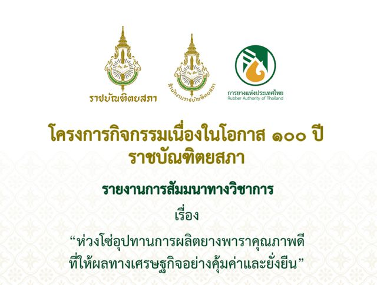
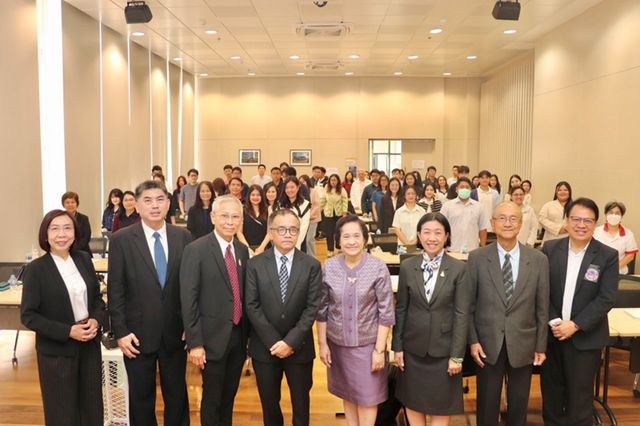
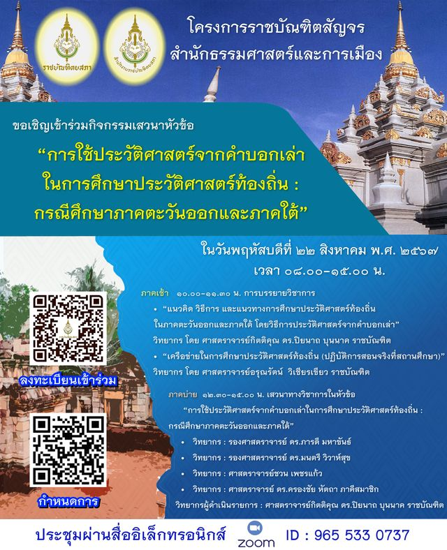
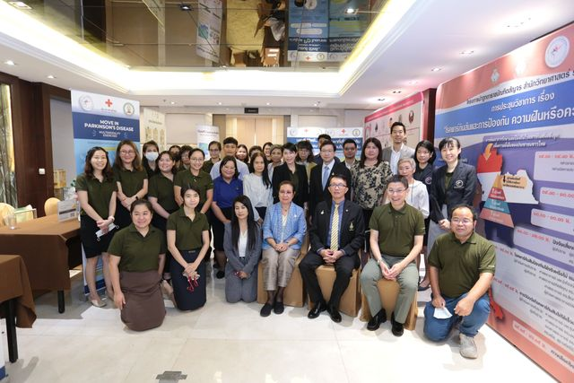
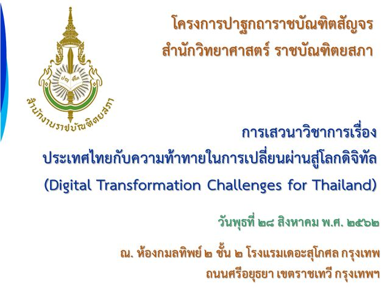
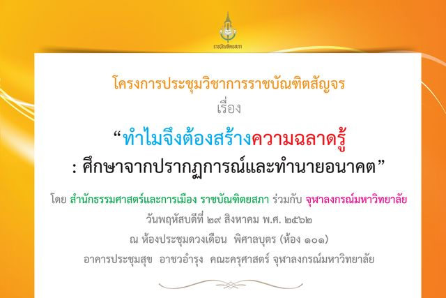
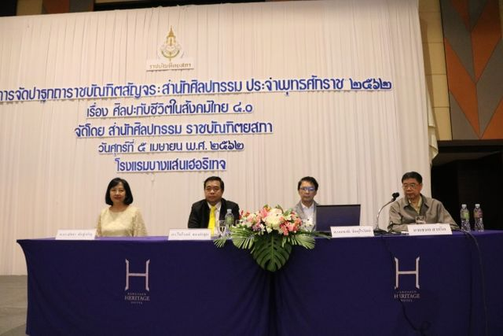
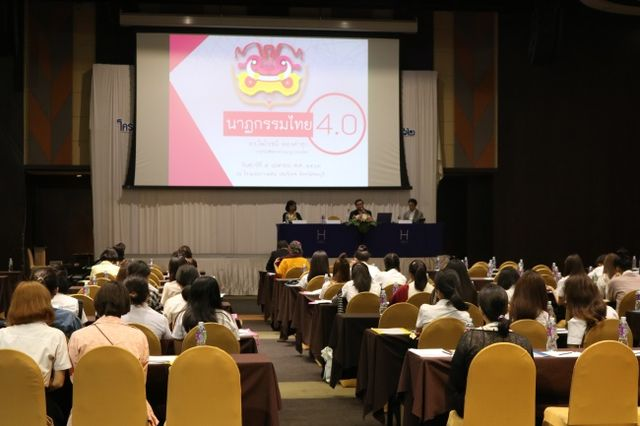
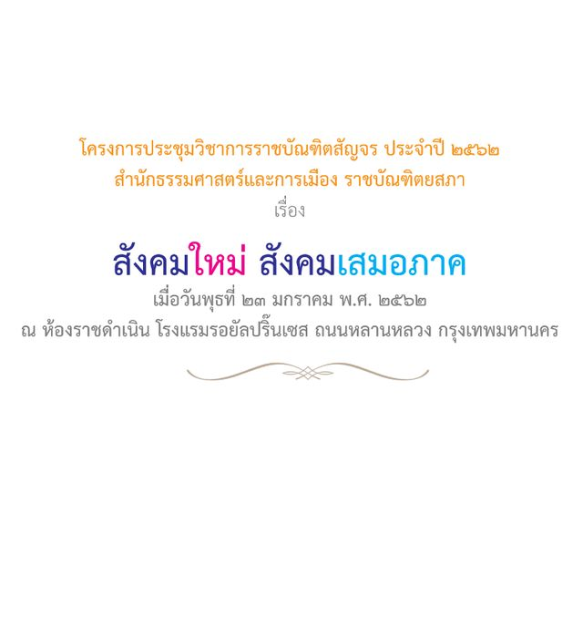
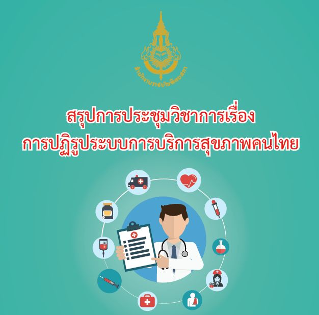

ราชบัณฑิตสัญจร
ราชบัณฑิตและภาคีสมาชิกนำความรู้ไปบรรยายและแลกเปลี่ยน กับผู้คนในภูมิภาคต่าง ๆ
รายงานและกิจกรรม
These reports are published in Thai on the academy websites.
-

สำนักวิทยาศาสตร์ โครงการกิจกรรมเนื่องในโอกาส ๑๐๐ ปีราชบัณฑิตยสภา รายงานการสัมมานาทางวิชาการ เรื่อง “ห่วงโซ่อุปทานการผลิตยางพาราคุณภาพดีที่ให้ผลทางเศรษฐกิจอย่างคุ้มค่าและยั่งยืน” อ่านต่อ - สำนักวิทยาศาสตร์ รายงานสรุปโครงการสัมนาวิชาการราชบัณฑิตสัญจร เรื่อง “การส่งเสริมการใช้เชื้อเพลิงชีวมวลอัดเม็ดอัดก้อน เพื่อสร้างความเข้มแข็งของเศรษฐกิจชุมชน ลดการปล่อยก๊าซเรือนกระจก และลดฝุ่น PM 2.5” อ่านต่อ
- สำนักวิทยาศาสตร์ รายงานสรุปการเสวนาวิชาการราชบัณฑิตสัญจร เรื่อง ทางออกที่ยั่งยืนในการแก้ปัญหาปลาหมอคางดำ อ่านต่อ
-

สำนักวิทยาศาสตร์ รายงานสรุปการบรรยายและข้อเสนอแนะเชิงนโยบายการจัดการขยะมูลฝอยและขยะพาสติกในประเทศไทย โครงการปาฐกถาราชบัณฑิตสัญจรและอาศรมความคิดด้านระบบโลกศาสตร์และวิทยาศาสตร์สิ่งแวดล้อม สำนักวิทยาศาสตร์ ราชบัณฑิตยสภา ปีงบประมาณ พ.ศ. ๒๕๖๘ การสัมมนาทางวิชาการ เรื่อง การจัดการขยะมูลฝอยอย่างยั่งยืน (Sustainable solid waste management) อ่านต่อ -

สำนักธรรมศาสตร์และการเมือง ขอเชิญเข้าร่วมโครงการราชบัณฑิตสัญจร การใช้ประวัติศาสตร์จากคำบอกเล่าในการศึกษาประวัติศาสตร์ท้องถิ่น : กรณีศึกษาภาคตะวันออกและภาคใต้ ขอเชิญเข้าร่วมโครงการราชบัณฑิตสัญจร สำนักธรรมศาสตร์และสำนักธรรมศาสตร์และการเมือง ปีงบประมาณ ๒๕๖๗ กิจกรรมเสวนาหัวข้อ “การใช้ประวัติศาสตร์จากคำบอกเล่าในการศึกษาประวัติศาสตร์ท้องถิ่น : กรณีศึกษาภาคตะวันออกและภาคใต้” ในวันพฤหัสบดีที่ ๒๒ สิงหาคม พ.ศ. ๒๕๖๗ เวลา ๐๘.๐ อ่านต่อ - สำนักวิทยาศาสตร์ สำนักวิทยาศาสตร์ ราชบัณฑิตยสภา จัดโครงการปาฐกถาราชบัณฑิตสัญจร สำนักวิทยาศาสตร์ ประจำปีงบประมาณ พ.ศ. ๒๕๖๗ การประชุมวิชาการเรื่อง “การวิจัยและพัฒนาชีวเภสัชภัณฑ์ : จากนโยบายสู่อุตสาหกรรมการผลิต” สำนักวิทยาศาสตร์ ราชบัณฑิตยสภา จัดโครงการปาฐกถาราชบัณฑิตสัญจร สำนักวิทยาศาสตร์ ประจำปีงบประมาณ พ.ศ. ๒๕๖๗ การประชุมวิชาการเรื่อง “การวิจัยและพัฒนาชีวเภสัชภัณฑ์ : จากนโยบายสู่อุตสาหกรรมการผลิต” เมื่อวันศุกร์ที่ ๑ มีนาคม พ.ศ. ๒๕๖๗ ณ อาคารศูนย์เรียนรวมเฉลิมพระเกีย อ่านต่อ
-

สำนักวิทยาศาสตร์ โรคพาร์กินสันและการป้องกัน ความฝันหรือความจริงที่เป็นไปได้ โครงการปาฐกถาราชบัณฑิตสัญจร สำนักวิทยาศาสตร์ ราชบัณฑิตยสภา การประชุมวิชาการ เรื่อง “โรคพาร์กินสันและการป้องกัน ความฝันหรือความจริงที่เป็นไปได้” เมื่อวันศุกร์ที่ ๗ กรกฎาคม พ.ศ. ๒๕๖๖ เวลา ๘.๓๐-๑๖.๓๐ น. สำนักวิทยาศาสตร์แห่งราชบัณฑิตยสภาได้จัดโครงการปาฐกถาราชบัณฑิ อ่านต่อ - สำนักศิลปกรรม โครงการปาฐกถาราชบัณฑิตสัญจร ภาษากับการสื่อสาร เพื่อสันติสุขที่ยั่งยืน อ่านต่อ
-

สำนักวิทยาศาสตร์ ประเทศไทยกับความท้าทายในการเปลี่ยนผ่านสู่โลกดิจิทัล (Digital Transformation Challenges for Thailand) วันพุธที่ ๒๘ สิงหาคม พ.ศ. ๒๕๖๒ ณ โรงแรมเดอะสุโกศล อ่านต่อ -

สำนักธรรมศาสตร์และการเมือง ทำไมจึงต้องสร้างความฉลาดรู้ : ศึกษาจากปรากฏการณ์และทำนายอนาคต โครงการประชุมวิชาการราชบัณฑิตสัญจร เรื่อง ทำไมจึงต้องสร้างความฉลาดรู้ : ศึกษาจากปรากฏการณ์และทำนายอนาคต โดย สํานักธรรมศาสตร์และการเมือง ราชบัณฑิตยสภา ร่วมกับ จุฬาลงกรณ์มหาวิทยาลัย วันพฤหัสบดีที่ ๒๙ สิงหาคม พ.ศ. ๒๕๖๒ณ ห้องประชุมดวงเดือน พิศาลบุตร (ห้อง ๑๐๑)อาคา อ่านต่อ -

สำนักศิลปกรรม ศิลปะกับชีวิตในสังคมไทย ๔.๐ การสัมมนาวิชาการในโครงการจัดปาฐกถาราชบัณฑิตสัญจร : สำนักศิลปกรรม เรื่อง ศิลปะกับชีวิตในสังคมไทย ๔.๐ จัดเมื่อวันศุกร์ที่ ๕ เมษายน พ.ศ. ๒๕๖๒ ณ ห้องแกรนด์บอลรูมแสนสุข โรงแรมบางแสนเฮอริเทจ อำเภอเมืองฯ จังหวัดชลบุรีภาคเช้า มีการอภิปรายเรื่อง “ศิลปะกับชีวิตในสังคมไท อ่านต่อ -

สำนักศิลปกรรม วัฒนธรรมทางภาษา ภาษาไทยกับวัฒนธรรม การสัมมนาวิชาการในโครงการจัดปาฐกถาราชบัณฑิตสัญจร : สำนักศิลปกรรม เรื่อง วัฒนธรรมทางภาษา ภาษาไทยกับวัฒนธรรม จัดเมื่อวันศุกร์ที่ ๑๕ กุมภาพันธ์ พ.ศ. ๒๕๖๒ ณ ห้องอมรินทร์ โรงแรมเอสดี อเวนิว เขตบางพลัด กรุงเทพฯ สำนักศิลปกรรมจัดการสัมมนาวิชาการในโครงการจัดปาฐกถาราชบั อ่านต่อ -

สำนักธรรมศาสตร์และการเมือง สังคมใหม่ สังคมเสมอภาค โครงการประชุมวิชาการราชบัณฑิตสัญจร ประจำปี ๒๕๖๒สำนักธรรมศาสตร์และการเมือง ราชบัณฑิตยสภา เรื่อง สังคมใหม่สังคมเสมอภาคเมื่อวันพุธที่ ๒๓ มกราคม พ.ศ. ๒๕๖๒ ณ ห้องราชดำเนิน โรงแรมรอยัลปริ๊นเซส ถนนหลานหลวง กรุงเทพมหานคร อ่านต่อ -

สำนักวิทยาศาสตร์ การปฏิรูประบบการบริการสุขภาพคนไทย สรุปการประชุมวิชาการเรื่องการปฏิรูประบบการบริการสุขภาพคนไทยหนังสือสรุปการประชุมวิชาการราชบัณฑิตสัญจร ประจำปี ๒๕๖๑สำนักวิทยาศาสตร์ ราชบัณฑิตยสภาเมื่อวันพุธที่ ๔ กรกฎาคม พ.ศ. ๒๕๖๑ณ โรงแรม เดอะ สุโกศล กรุงเทพฯ อ่านต่อ
ไม่พบรายการที่ตรงกับคำค้น